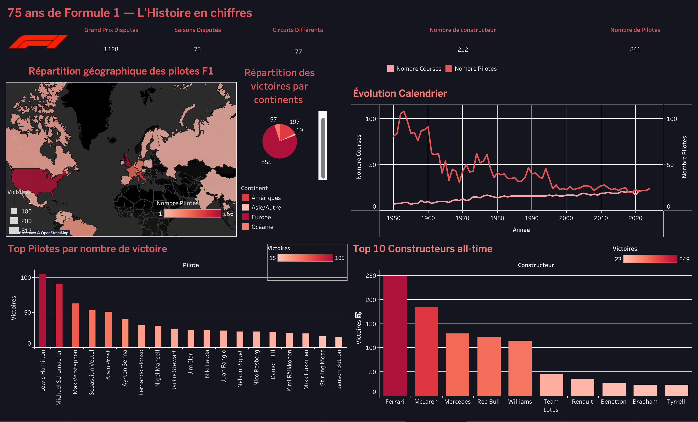
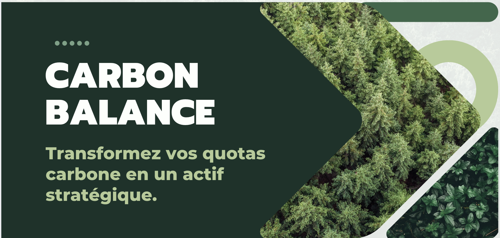
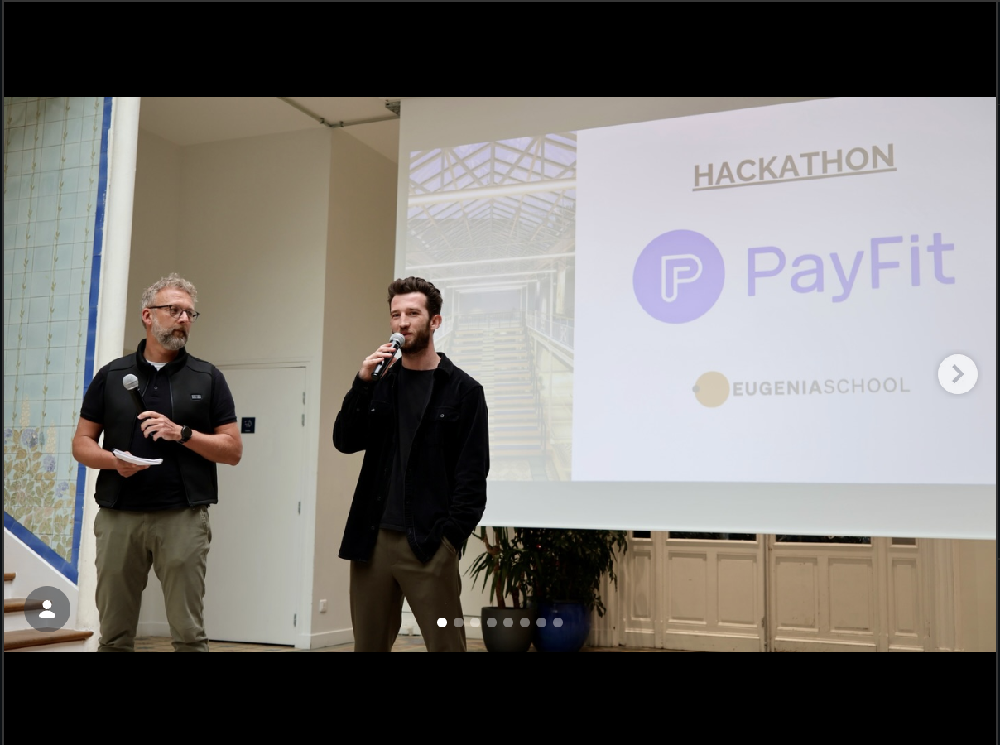
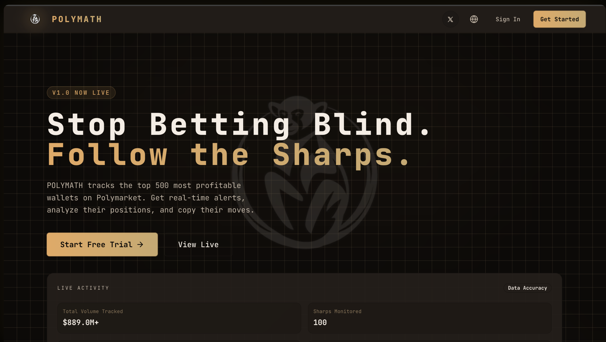

Ce que j'ai construit
Des projets concrets qui montrent comment je transforme des données brutes en insights actionnables.

Exploration et analyse de 70 ans de données Formula 1 : performances des pilotes, stratégies de pit stops, évolution des constructeurs. Requêtes SQL avancées, visualisations interactives et storytelling data.

Extraction automatisée de données musicales depuis Discogs : artistes, albums, genres, notations et prix. Pipeline asynchrone avec BeautifulSoup, système de retry et export CSV.

5 cerveaux, 5 jours pour créer une startup innovante. Plateforme full-stack de comptabilité carbone : transformez vos quotas CO₂ en actif stratégique. Scopes 1, 2 & 3, transferts inter-filiales, −70% vs Excel.

Système multi-agents pour automatiser la production de contenu SEO conforme aux enjeux juridiques RH. Golden Circle, benchmark concurrents, 3 articles complets et simulateur Lovable.

Plateforme SaaS fonctionnelle d'analyse des marchés de prédiction. Identification des traders performants, suivi de leurs positions et détection de signaux sur Polymarket. 100% construit en vibe coding avec Cursor.